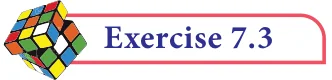

- 1.Find the volume of a cuboid whose dimensions are
- (i)length \(= 12\) cm, breadth \(= 8\) cm, height \(= 6\) cm
- (ii)length \(= 60 m\), breadth \(= 25 m\), height \(= 1.5 m\)
- 2.The dimensions of a match box are 6 cm \(\times 3.5\) cm \(\times 2.5\) cm. Find the volume of a
packet containing 12 such match boxes.
- 3.The length, breadth and height of a chocolate box are in the ratio 5:4:3. If its volume
is 7500 cm , then find its dimensions.
- 4.The length, breadth and depth of a pond are 20.5 m, 16 m and 8 m respectively. Find
the capacity of the pond in litres.
- 5.The dimensions of a brick are 24 cm \(\times 12\) cm \(\times 8\) cm. How many such bricks will be
required to build a wall of 20 m length, 48 cm breadth and 6 m height?
- 6.The volume of a container is 1440 m . The length and breadth of the container are 15 m
and 8 m respectively. Find its height.
- 7.Find the volume of a cube each of whose side is (i) 5 cm (ii) 3.5 m (iii) 21 cm
- 8.A cubical milk tank can hold 125000 litres of milk. Find the length of its side in
metres.
- 9.A metallic cube with side 15 cm is melted and formed into a cuboid. If the length
and height of the cuboid is 25 cm and 9 cm respectively then find the breadth of the cuboid.

Multiple choice questions
- 1.The semi-perimeter of a triangle having sides 15 cm, 20 cm and 25 cm is
(1) 60 cm (2) 45 cm (3) 30 cm (4) 15 cm
- 2.If the sides of a triangle are 3 cm, 4 cm and 5 cm, then the area is
(1) 3 cm (2) 6 cm (3) 9 cm (4) 12 cm
- 3.The perimeter of an equilateral triangle is 30 cm. The area is
(1) 10 3 cm (2) 12 3 cm (3) 15 3 cm (4) 25 3 cm
- 4.The lateral surface area of a cube of side 12 cm is
(1) 144 cm (2) 196 cm (3) 576 cm (4) 664 cm